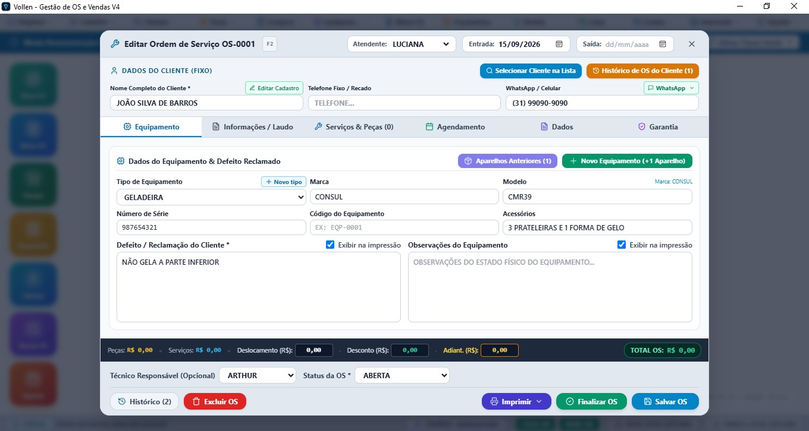

Gestão OS V4 Enterprise: O Sistema Definitivo para sua Assistência
A versão topo de linha do Gestão OS equipada com todos os recursos avançados: compatibilidade com leitor de código de barras, central de etiquetas térmicas e A4, importação de estoque via XML de NF-e, ordem de compra automática, baixa inteligente, DRE financeiro com lucro real e módulo fiscal completo.
Tudo o que sua assistência de eletrodomésticos precisa
Desenvolvido com base na rotina real de assistências de eletrodomésticos, refrigeração, ferramentas elétricas e eletrônica.
Ordens de Serviço
Controle completo com status personalizáveis, laudos técnicos, modelos por marcas e OS individual por equipamento.
Caixa & Taxas de Cartão
Fechamento cego, comissões de técnicos e cálculo automático de taxas/juros de máquina de cartão.
Estoque & Baixa Inteligente
Baixa ou retorno automático de peças conforme o status da OS definido pelo usuário.
Relatórios por Funcionário
Produtividade, comissões, faturamento por técnico e ranking de lucratividade com exportação Excel.
Leitor de Código de Barras
Compatível com leitor 1D e 2D para identificação ultrarrápida de peças, OS e produtos no balcão.
Central de Etiquetas
Impressão de etiquetas térmicas e A4 para aparelho/OS, estoque de peças com código de barras e lacre de garantia.
Estoque Automático via XML
Importe notas fiscais (NF-e) do fornecedor e cadastre dezenas de peças e custos em segundos.
Ordem de Compra Automática
Geração instantânea de pedidos de reposição ao atingir o estoque mínimo das peças cadastradas.
WhatsApp Automático
Envio de status em cada etapa do atendimento diretamente no WhatsApp do cliente.
App Android Técnico
Técnicos acessam laudos, fotos e atualizam status pelo smartphone na bancada ou campo.
PDV Balcão & Orçamentos
Vendas diretas, orçamentos com conversão em OS em 1 clique e divisão de pagamentos.
Gestão de Garantias
Controle automático de prazos de garantia e reabertura sem cobrança indevida com histórico protegido.
📋
Fluxo Principal
Controle Absoluto de Ordens de Serviço
Desde o recebimento do aparelho com checklist de entrada até a entrega ao cliente com termo de garantia impresso.
Status personalizáveis
Recebido, Em Análise, Aguardando Peças, Em Manutenção, Finalizado e Entregue.
1 Aparelho por OS + Botão Rápido
Cada aparelho tem sua OS individual. Para cadastrar outro aparelho do mesmo cliente, basta clicar em +Novo Aparelho para abrir a próxima OS instantaneamente.
Histórico Completo por Cliente
Veja rapidamente todas as ordens de serviço anteriores, aparelhos atendidos, laudos e histórico financeiro de cada cliente.
Retorno em Garantia
Vincula o histórico anterior, mantendo laudos salvos e sem cobrança repetida.

📱
Aplicativo do Técnico
App Android em Tempo Real
Seus técnicos atualizam a bancada direto pelo smartphone. Praticidade para consultar histórico, dar baixa em peças e anexar laudos técnicos.
Lista dinâmica de OS do dia por técnico
Alteração de status com sincronização imediata
Consulta rápida aos dados do cliente
Pareamento simplificado sem configurações de rede complexas
Controle financeiro rigoroso com conferência cega na troca de operadores, controle de crediário e emissão de recibos térmicos.
Conferência cega para evitar fraudes no fechamento
Divisão de pagamentos (PIX + Cartão + Dinheiro)
Controle de estoque de balcão com alerta de quantidade mínima
Histórico completo de movimentações financeiras
SALDO DO CAIXA
R$ 4.872,50
↑ +R$ 1.250 hoje
ENTRADAS
R$ 6.240
SAÍDAS
R$ 1.367
⚡ EXCLUSIVIDADE VERSÃO V4 ENTERPRISE
Automação Total para sua Loja e Bancada
Veja os recursos de ponta que só a Versão V4 tem para quem precisa de máxima produtividade, estoque com código de barras e controle financeiro avançado.
🏷️
Leitor de Código de Barras & Etiquetas
Imprima etiquetas adesivas térmicas (Argox, Elgin, Zebra) ou folhas A4 para colar nos aparelhos, peças e lacres de garantia. Bipou com o leitor 1D/2D, o sistema localiza na hora.
✓ Agiliza a entrada e saída no balcão
📥
Entrada Automática por XML de NF-e
Basta subir o arquivo XML da nota fiscal enviada pelo fornecedor. O Gestão OS cadastra todas as peças, atualiza preço de custo, calcula margem de venda e alimenta o estoque em segundos.
✓ Zero digitação manual de notas
📊
DRE Financeiro & Lucro Líquido Real
Demonstrativo de Resultado completo: saiba o lucro líquido de cada OS descontando o custo exato da peça e a comissão do técnico. Descubra os serviços mais lucrativos da sua assistência.
✓ Controle financeiro de nível contábil
Teste o Gestão OS na sua assistência por 10 dias
Baixe o instalador oficial e comprove como sua produtividade vai aumentar.